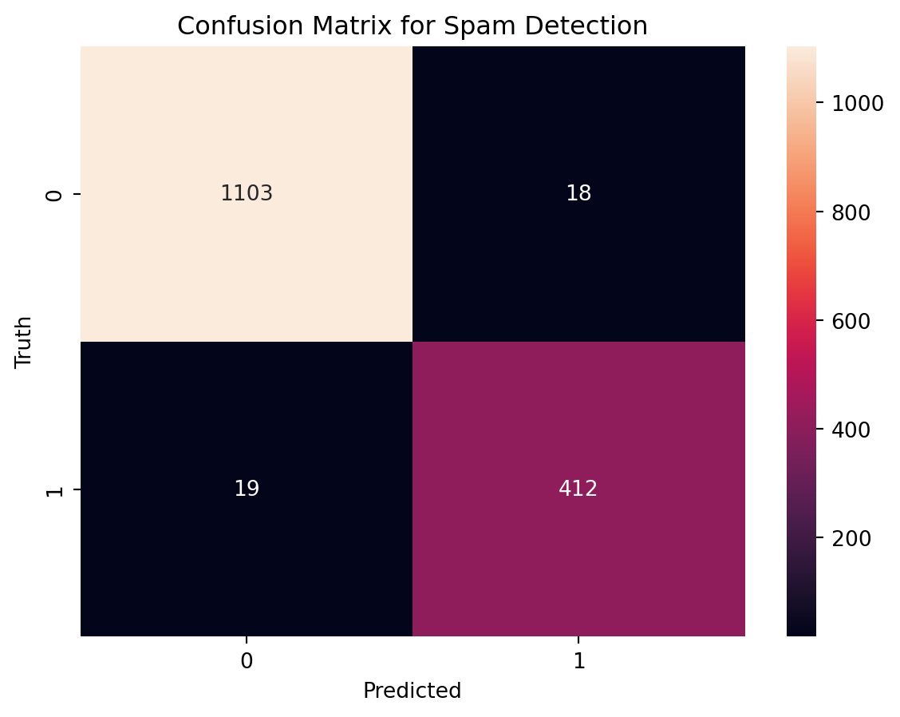
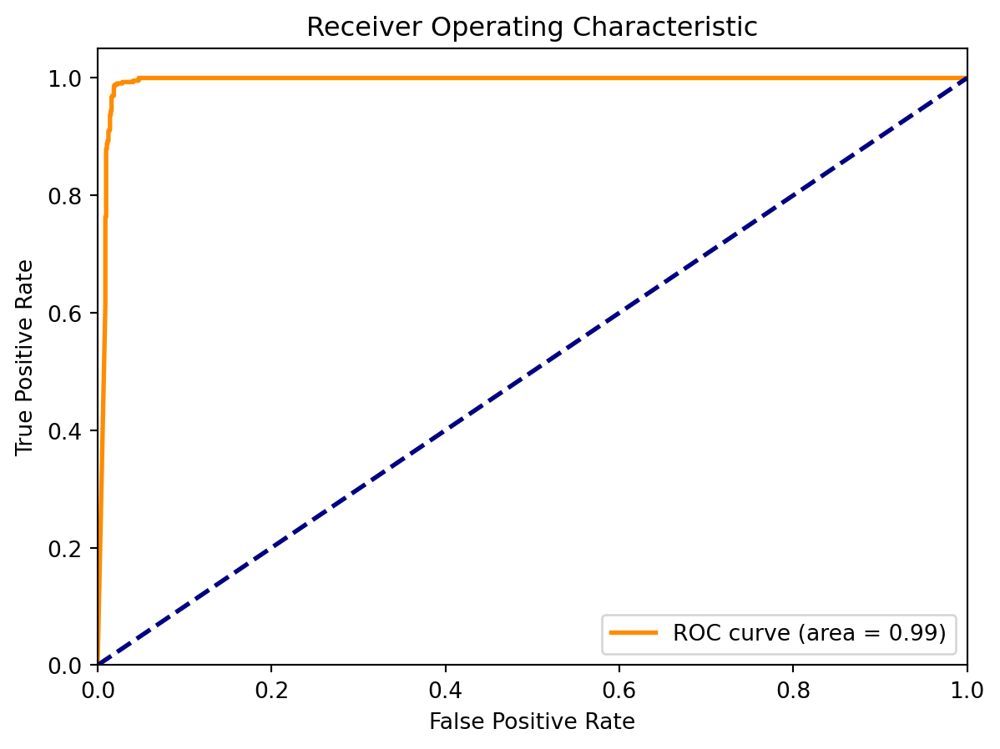
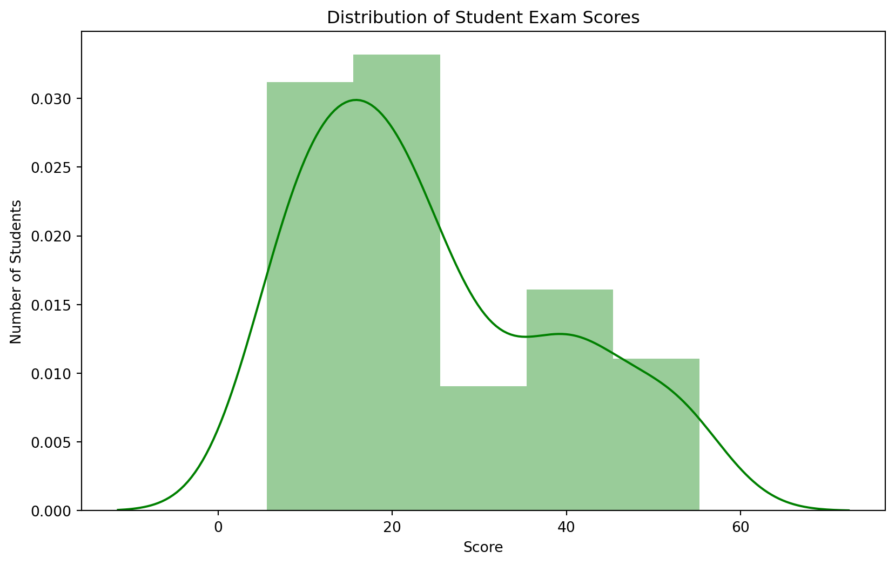

Tackling Spam with Naive Bayes: A Practical Approach
In the digital age, spam has become an unavoidable nuisance, cluttering inboxes and consuming valuable time. However, machine learning offers a powerful tool in the fight against spam. In this blog, we’ll explore how the Naive Bayes classifier, a simple yet effective machine learning algorithm, can be utilized for spam detection. We will also include a Python code example with data visualization using an external dataset.
The Power of Naive Bayes in Spam Detection
Naive Bayes classifiers work on the principle of conditional probability, as derived from Bayes’ Theorem. In the context of spam detection, it calculates the probability of an email being spam based on the frequency of words it contains. Despite its simplicity, Naive Bayes can be incredibly effective in distinguishing spam from non-spam (ham) emails.
Real-World Application: Spam Detection in Emails
To demonstrate this, we’ll use a publicly available dataset of emails, pre-labeled as spam or ham.
Step 1: Setting Up the Environment
First, we’ll import the necessary libraries and load our dataset:
Code
import pandas as pdimport numpy as npimport matplotlib.pyplot as pltfrom sklearn.model_selection import train_test_splitfrom sklearn.feature_extraction.text import CountVectorizerfrom sklearn.naive_bayes import MultinomialNBfrom sklearn.metrics import classification_report, confusion_matriximport seaborn as sns# Load the datasetemail_data = pd.read_csv('spam_ham_dataset.csv')
Step 2: Preprocessing the Data
We’ll preprocess the data by converting the email texts into a format that can be used by our machine learning model:
Code
# Splitting the dataset into features and labelsX = email_data['text']y = email_data['label'] # 1 for spam, 0 for ham# Convert text data into numerical vectorsvectorizer = CountVectorizer()X = vectorizer.fit_transform(X)# Split the dataset into training and testing setsX_train, X_test, y_train, y_test = train_test_split(X, y, test_size=0.3, random_state=42)
Step 3: Training the Naive Bayes Classifier
Now, we’ll train a Naive Bayes classifier on our data:
Code
# Training the Naive Bayes modelmodel = MultinomialNB()model.fit(X_train, y_train)
MultinomialNB()
In a Jupyter environment, please rerun this cell to show the HTML representation or trust the notebook. On GitHub, the HTML representation is unable to render, please try loading this page with nbviewer.org.
MultinomialNB()
Step 4: Model Evaluation
We evaluate the performance of our model on the test set:
A confusion matrix and ROC Curve can be a great way to visualize the performance of our classifier as shown in Figure 1:
Code
# Visualizing the confusion matrixcm = confusion_matrix(y_test, predictions)sns.heatmap(cm, annot=True, fmt='d')plt.xlabel('Predicted')plt.ylabel('Truth')plt.title('Confusion Matrix for Spam Detection')plt.show()# Ensure that y is in a binary numerical formaty = email_data['label'].replace({'ham': 0, 'spam': 1})# Split the dataset into training and testing setsX_train, X_test, y_train, y_test = train_test_split(X, y, test_size=0.3, random_state=42)from sklearn.metrics import roc_curve, auc# Calculate the probabilities of each classy_prob = model.predict_proba(X_test)[:, 1]# Compute ROC curve and ROC areafpr, tpr, _ = roc_curve(y_test, y_prob)roc_auc = auc(fpr, tpr)# Plotting ROC Curveplt.figure()plt.plot(fpr, tpr, color='darkorange', lw=2, label='ROC curve (area = %0.2f)'% roc_auc)plt.plot([0, 1], [0, 1], color='navy', lw=2, linestyle='--')plt.xlim([0.0, 1.0])plt.ylim([0.0, 1.05])plt.xlabel('False Positive Rate')plt.ylabel('True Positive Rate')plt.title('Receiver Operating Characteristic')plt.legend(loc="lower right")plt.show()

(a) Confusion Matrix

(b) RoC Curve
Figure 1: Naive Bayes Resullts
Understanding the Results
The confusion matrix provides a visual summary of how well our model performed. The matrix’s diagonal shows the number of correct predictions (true positives and true negatives), while off-diagonal elements are those that were incorrectly classified.
Conclusion
Naive Bayes, with its assumption of feature independence and probability-based approach, is particularly well-suited for text classification tasks like spam detection. Its efficiency and ease of implementation make it an excellent choice for quickly deploying a spam detection system.
Though simple, this example illustrates the power of machine learning in automating tasks that were traditionally handled manually. By training a machine learning model on examples of spam and non-spam emails, we can effectively filter out unwanted messages, saving time and improving our digital experience.
Demystifying Test Scores: Analyzing Student Performance with Random Variables
In the educational landscape, understanding and analyzing student performance is vital for educators and policymakers. Test scores, a quintessential example of random variables in education, often follow a normal distribution – commonly known as the bell-shaped curve. In this blog post, we will explore how to analyze student test scores using probability theory and random variables. We’ll illustrate this with Python code and include data visualization to provide a clearer picture of this distribution.
Understanding Random Variables in Test Scores
Test scores are a classic example of a continuous random variable. They can range over a continuum of values and, in many cases, follow a normal distribution. This means most students score around the average, with fewer students scoring very high or very low.
Real-World Scenario: Exam Score Analysis
Let’s say we have a dataset of student scores from a recent exam. Our goal is to visualize these scores and understand their distribution.
Step 1: Setting Up the Python Environment
First, we import the necessary libraries for our analysis:
Code
import pandas as pdimport numpy as npimport matplotlib.pyplot as pltimport seaborn as sns
Step 2: Loading and Preparing the Dataset
Assuming we have a dataset student_scores.csv that includes scores of students, we load it into a DataFrame:
Code
# Load the datasetscores_df = pd.read_csv('Student_marks.csv')
Step 3: Data Visualization with Histogram
We’ll use a histogram to visualize the distribution of exam scores, as seen in Figure 2. A histogram is a great way to see the frequency of score ranges, and with scores typically following a normal distribution, we expect to see a bell-shaped curve.
Code
# Plotting the histogramplt.figure(figsize=(10, 6))sns.distplot(scores_df['Marks'], kde=True, color='green')plt.title('Distribution of Student Exam Scores')plt.xlabel('Score')plt.ylabel('Number of Students')plt.show()
/var/folders/d2/vlmks3tx4jx2bk0gvbw50rr40000gn/T/ipykernel_36502/809933741.py:3: UserWarning:
`distplot` is a deprecated function and will be removed in seaborn v0.14.0.
Please adapt your code to use either `displot` (a figure-level function with
similar flexibility) or `histplot` (an axes-level function for histograms).
For a guide to updating your code to use the new functions, please see
https://gist.github.com/mwaskom/de44147ed2974457ad6372750bbe5751

Figure 2: Distribution of Student Exam Scores
Step 4: Interpreting the Distribution
The histogram will likely display the bell-shaped curve of the normal distribution. This curve shows us how the test scores are spread out. Most students will score around the mean (the peak of the bell), with fewer students scoring significantly higher or lower.
Conclusion
The analysis of student test scores using the concept of random variables and probability theory provides valuable insights into student performance. It helps in identifying how scores are distributed, the average performance, and the variability in scores. Such analysis is crucial for educational institutions to evaluate the effectiveness of their teaching methods, curriculum design, and overall student understanding. Understanding the distribution of test scores also helps in setting realistic benchmarks and expectations, both for educators and students. It underscores the significance of data-driven approaches in educational settings, where decisions can be made based on empirical evidence rather than intuition.
Source Code
---title: "Probability Theory and Random Variables"image: image.jpegauthor: "Sahana Bhaskar"date: "2023-11-27"categories: [random variable, probability, statistics]format: html: code-fold: true code-tools: truejupyter: python3---# Tackling Spam with Naive Bayes: A Practical ApproachIn the digital age, spam has become an unavoidable nuisance, cluttering inboxes and consuming valuable time. However, machine learning offers a powerful tool in the fight against spam. In this blog, we'll explore how the Naive Bayes classifier, a simple yet effective machine learning algorithm, can be utilized for spam detection. We will also include a Python code example with data visualization using an external dataset.## The Power of Naive Bayes in Spam DetectionNaive Bayes classifiers work on the principle of conditional probability, as derived from Bayes' Theorem. In the context of spam detection, it calculates the probability of an email being spam based on the frequency of words it contains. Despite its simplicity, Naive Bayes can be incredibly effective in distinguishing spam from non-spam (ham) emails.## Real-World Application: Spam Detection in EmailsTo demonstrate this, we'll use a publicly available dataset of emails, pre-labeled as spam or ham.### Step 1: Setting Up the EnvironmentFirst, we'll import the necessary libraries and load our dataset:```{python}import pandas as pdimport numpy as npimport matplotlib.pyplot as pltfrom sklearn.model_selection import train_test_splitfrom sklearn.feature_extraction.text import CountVectorizerfrom sklearn.naive_bayes import MultinomialNBfrom sklearn.metrics import classification_report, confusion_matriximport seaborn as sns# Load the datasetemail_data = pd.read_csv('spam_ham_dataset.csv')```### Step 2: Preprocessing the DataWe'll preprocess the data by converting the email texts into a format that can be used by our machine learning model:```{python}# Splitting the dataset into features and labelsX = email_data['text']y = email_data['label'] # 1 for spam, 0 for ham# Convert text data into numerical vectorsvectorizer = CountVectorizer()X = vectorizer.fit_transform(X)# Split the dataset into training and testing setsX_train, X_test, y_train, y_test = train_test_split(X, y, test_size=0.3, random_state=42)```### Step 3: Training the Naive Bayes ClassifierNow, we'll train a Naive Bayes classifier on our data:```{python}# Training the Naive Bayes modelmodel = MultinomialNB()model.fit(X_train, y_train)```### Step 4: Model EvaluationWe evaluate the performance of our model on the test set:```{python}# Predictionspredictions = model.predict(X_test)# Evaluationprint(classification_report(y_test, predictions))print(confusion_matrix(y_test, predictions))```### Step 5: Visualizing the ResultsA confusion matrix and ROC Curve can be a great way to visualize the performance of our classifier as shown in @fig-results:```{python}#| label: fig-results#| fig-cap: "Naive Bayes Results"#| fig-subcap:#| - Confusion Matrix#| - RoC Curve# Visualizing the confusion matrixcm = confusion_matrix(y_test, predictions)sns.heatmap(cm, annot=True, fmt='d')plt.xlabel('Predicted')plt.ylabel('Truth')plt.title('Confusion Matrix for Spam Detection')plt.show()# Ensure that y is in a binary numerical formaty = email_data['label'].replace({'ham': 0, 'spam': 1})# Split the dataset into training and testing setsX_train, X_test, y_train, y_test = train_test_split(X, y, test_size=0.3, random_state=42)from sklearn.metrics import roc_curve, auc# Calculate the probabilities of each classy_prob = model.predict_proba(X_test)[:, 1]# Compute ROC curve and ROC areafpr, tpr, _ = roc_curve(y_test, y_prob)roc_auc = auc(fpr, tpr)# Plotting ROC Curveplt.figure()plt.plot(fpr, tpr, color='darkorange', lw=2, label='ROC curve (area = %0.2f)'% roc_auc)plt.plot([0, 1], [0, 1], color='navy', lw=2, linestyle='--')plt.xlim([0.0, 1.0])plt.ylim([0.0, 1.05])plt.xlabel('False Positive Rate')plt.ylabel('True Positive Rate')plt.title('Receiver Operating Characteristic')plt.legend(loc="lower right")plt.show()```### Understanding the ResultsThe confusion matrix provides a visual summary of how well our model performed. The matrix's diagonal shows the number of correct predictions (true positives and true negatives), while off-diagonal elements are those that were incorrectly classified.## ConclusionNaive Bayes, with its assumption of feature independence and probability-based approach, is particularly well-suited for text classification tasks like spam detection. Its efficiency and ease of implementation make it an excellent choice for quickly deploying a spam detection system.Though simple, this example illustrates the power of machine learning in automating tasks that were traditionally handled manually. By training a machine learning model on examples of spam and non-spam emails, we can effectively filter out unwanted messages, saving time and improving our digital experience.# Demystifying Test Scores: Analyzing Student Performance with Random VariablesIn the educational landscape, understanding and analyzing student performance is vital for educators and policymakers. Test scores, a quintessential example of random variables in education, often follow a normal distribution – commonly known as the bell-shaped curve. In this blog post, we will explore how to analyze student test scores using probability theory and random variables. We'll illustrate this with Python code and include data visualization to provide a clearer picture of this distribution.## Understanding Random Variables in Test ScoresTest scores are a classic example of a continuous random variable. They can range over a continuum of values and, in many cases, follow a normal distribution. This means most students score around the average, with fewer students scoring very high or very low.## Real-World Scenario: Exam Score AnalysisLet's say we have a dataset of student scores from a recent exam. Our goal is to visualize these scores and understand their distribution.### Step 1: Setting Up the Python EnvironmentFirst, we import the necessary libraries for our analysis:```{python}import pandas as pdimport numpy as npimport matplotlib.pyplot as pltimport seaborn as sns```### Step 2: Loading and Preparing the DatasetAssuming we have a dataset student_scores.csv that includes scores of students, we load it into a DataFrame:```{python}# Load the datasetscores_df = pd.read_csv('Student_marks.csv')```### Step 3: Data Visualization with HistogramWe'll use a histogram to visualize the distribution of exam scores, as seen in @fig-plot. A histogram is a great way to see the frequency of score ranges, and with scores typically following a normal distribution, we expect to see a bell-shaped curve.```{python}#| label: fig-plot#| fig-cap: "Distribution of Student Exam Scores"# Plotting the histogramplt.figure(figsize=(10, 6))sns.distplot(scores_df['Marks'], kde=True, color='green')plt.title('Distribution of Student Exam Scores')plt.xlabel('Score')plt.ylabel('Number of Students')plt.show()```### Step 4: Interpreting the DistributionThe histogram will likely display the bell-shaped curve of the normal distribution. This curve shows us how the test scores are spread out. Most students will score around the mean (the peak of the bell), with fewer students scoring significantly higher or lower.## ConclusionThe analysis of student test scores using the concept of random variables and probability theory provides valuable insights into student performance. It helps in identifying how scores are distributed, the average performance, and the variability in scores. Such analysis is crucial for educational institutions to evaluate the effectiveness of their teaching methods, curriculum design, and overall student understanding.Understanding the distribution of test scores also helps in setting realistic benchmarks and expectations, both for educators and students. It underscores the significance of data-driven approaches in educational settings, where decisions can be made based on empirical evidence rather than intuition.